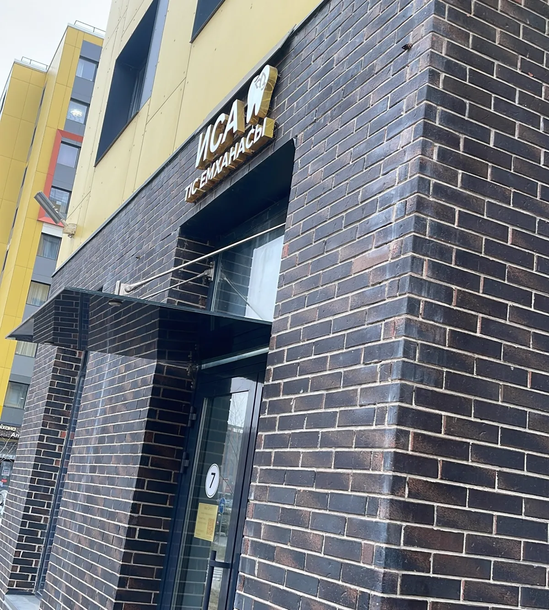
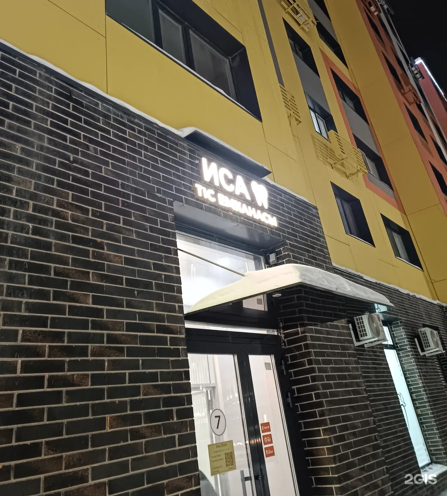
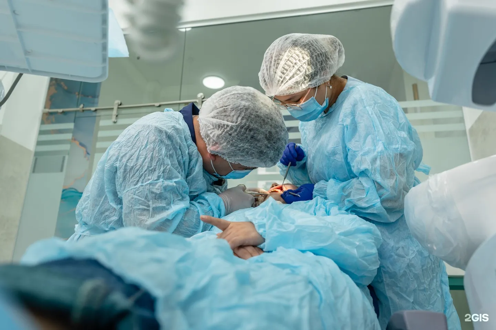
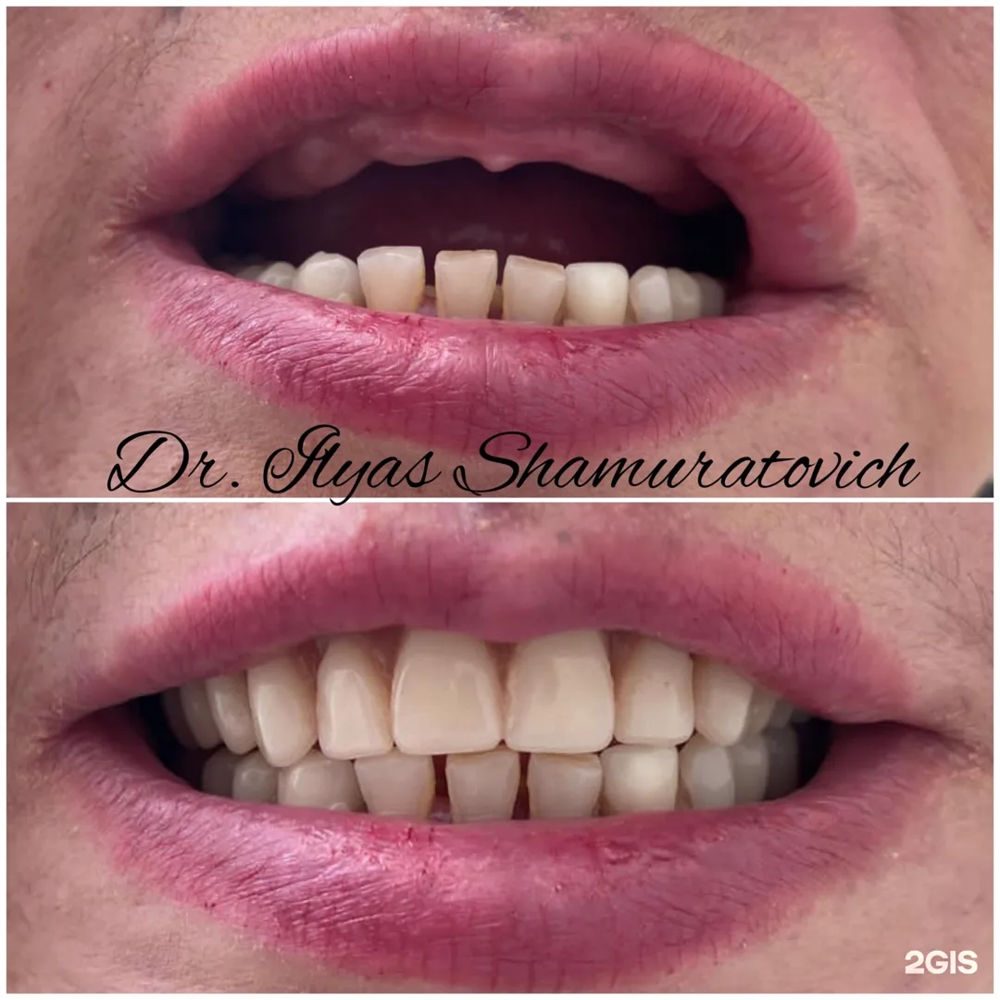
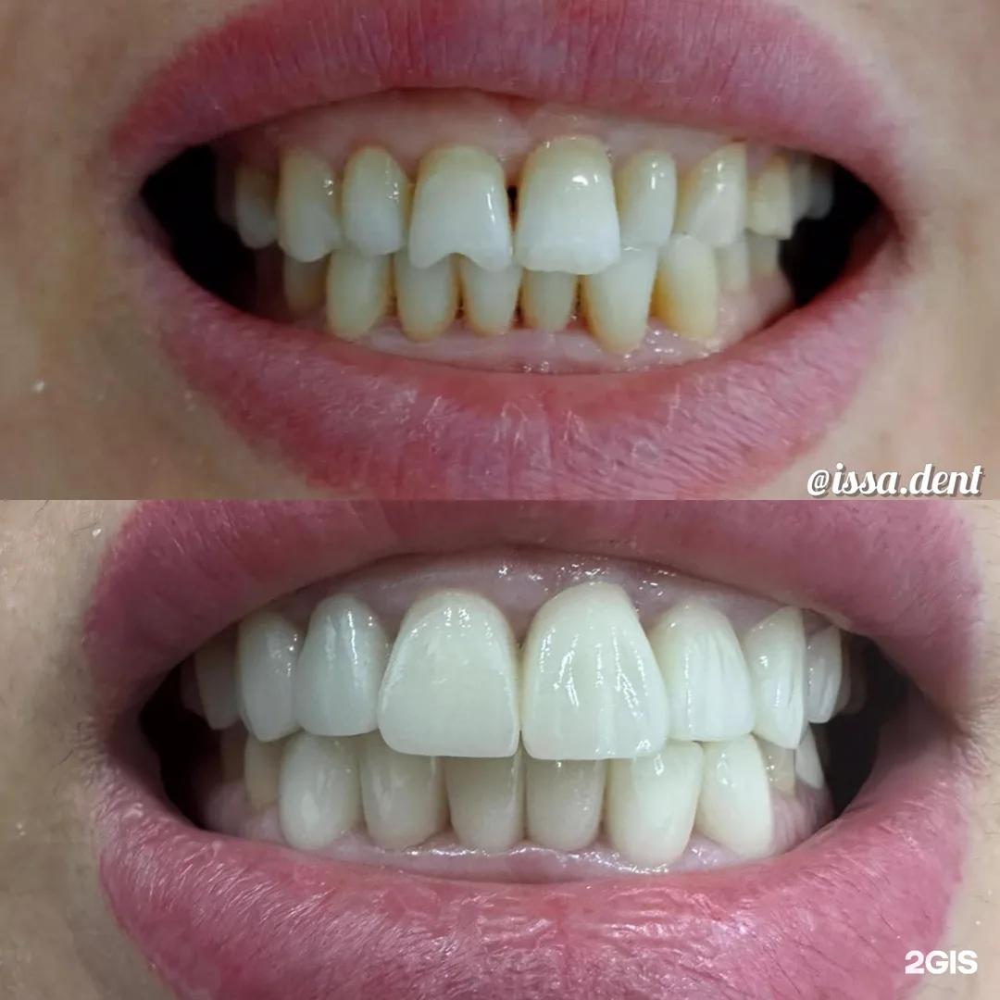
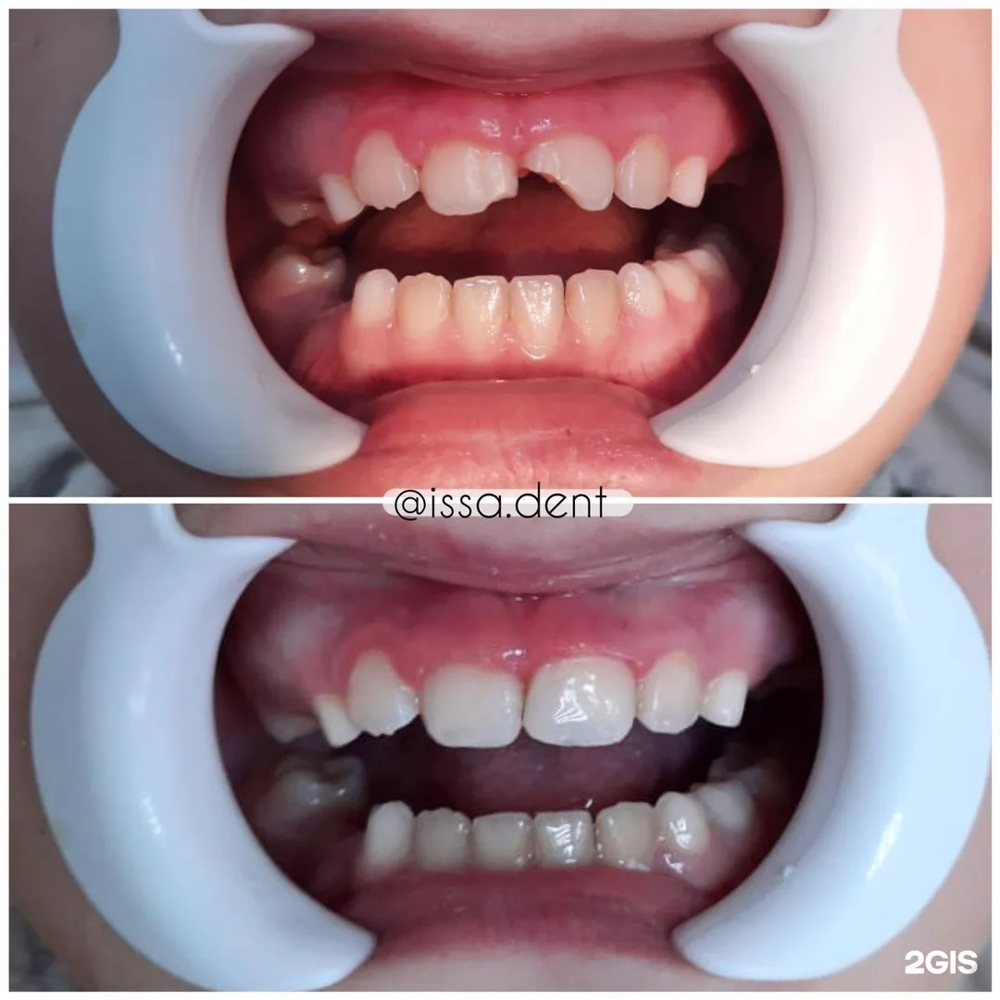
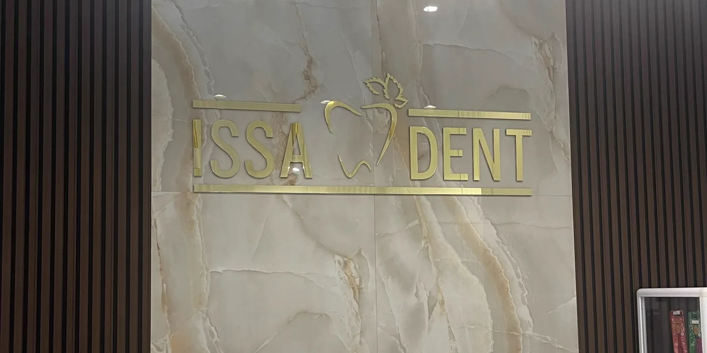

Иса Ильяс Шамуратович
Хирургия, имплантация, протезирование
В профессии больше 10 лет, указано в 2ГИС.
Лечим, удаляем и протезируем днём и ночью по записи. В 2ГИС 4,9 по 497 оценкам.


Нажмите на свой случай, откроется WhatsApp с готовым текстом. Если трудно дышать или глотать, звоните 103.
Стоимость врач назовёт после осмотра. Детей тоже принимают.

Кариес, пульпит, периодонтит, реставрация передних зубов
Обычные зубы и зубы мудрости, в том числе сложные
Приём челюстно-лицевого хирурга
Импланты Osstem и Dio из Южной Кореи, All-on-4
Циркониевые и металлокерамические коронки, съёмные протезы
Металлические, керамические, сапфировые
Чистка Air Flow в три этапа, плазмолифтинг
Сверху снимок до лечения, снизу после.
Работа Ильяса Шамуратовича
Форма и цвет
Восстановлены передние зубы



Имена из 2ГИС и Instagram клиники. Кто дежурит сегодня, подскажут по телефону.
Хирургия, имплантация, протезирование
В профессии больше 10 лет, указано в 2ГИС.
Удаление зубов
Пациенты пишут о зубах мудрости и осмотрах после удаления.
Челюстно-лицевой хирург
Пациентка пишет, что всё спокойно объясняет.
Лечение взрослых и детей
В отзывах её называют внимательной и аккуратной.
Пересказаны из 2ГИС.
Несколько лет не решался удалить зуб мудрости, в других клиниках отказывали. Здесь удалили спокойно и гладко, потом звали на осмотры.
Nurassyl Zhananov, 25 октября 2026
До приёма объяснили все этапы: снимок, консультация, аллергопроба, запись. Врач был на связи.
Бакытгул Жандаулова, 25 сентября 2026
Удаление было сложным. Врачи всё подробно объясняли и поддерживали, пока заживало.
Ленка П., 26 октября 2026
Ребёнок сидел спокойно, не боялся и не плакал. Спасибо врачу Диасу.
Айнур Жолдасбековна, 8 октября 2026, перевод с казахского
Да, клиника работает круглосуточно по записи. Ночью сначала позвоните, чтобы дежурный врач вас ждал.
Наличными, переводом или по QR. Есть Kaspi Red и рассрочка, условия уточните при записи.
Да. При записи назовите возраст ребёнка.
Первый этаж, белая вывеска «ИСА тіс емханасы» на тёмном кирпиче. Рядом 18 парковок.
Проспект Туран, 55/11, район Нура. На стене за стойкой золотой логотип Issa Dent.
